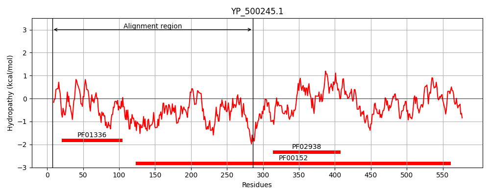
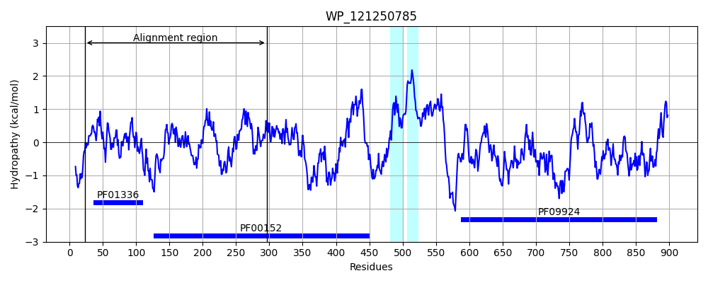
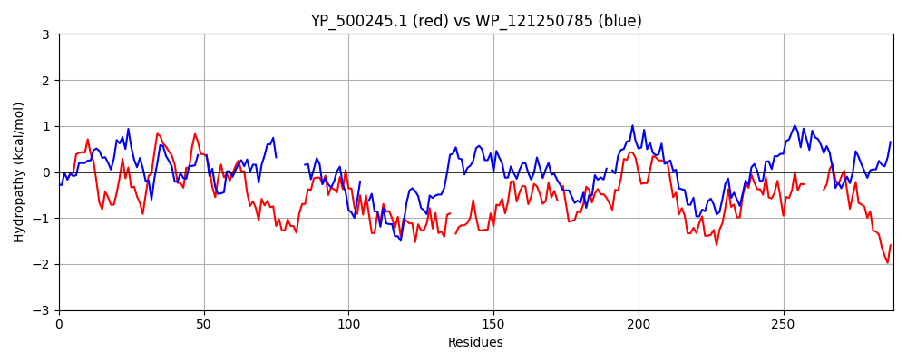

Hit Accession: WP_121250785
Hit TCID: 9.B.111.1.5
Hit Description: gnl|BL_ORD_ID|21812 gnl|TC-DB|WP_121250785|9.B.111.1.5 lysine--tRNA ligase [Solirubrobacter pauli]
Mach Len: 288
e:0.000000
Query TMS Count : 0
Hit TMS Count: 2
TMS-Overlap Score: 0.000000
Predicted Substrates:None
BLAST Alignment:
Score: 244 , Bit scores: 98 bits, E-value: 1.9e-21, Alignment length: 288, Percentage identity: 27
Query: 7 YCGLVTEAFLGQEITLKGWVNNRRDLGGLIFVDLRDREGIVQVVFNPAFSEEALKIAETVRSEYVVEVQGTVTKRDPETVNPKIKTGQVEVQVTNIKVINKSETPPFSINEENVNVDENIRLKYRYLDLRRQELAQ-TFKMRHQITRSIRQYLDDEGFFDIETPVLTKSTPEG-ARDYLVPSRVHDGEFYALPQSPQLFKQLLMISGFDKYYQIVKCFRDEDLRADRQPEFTQVDIEMSFVDQEDVMQMGEEMLKKVV------KEVKGVEINGAFPRMTYKEAMRRY 286
+ GL +A + + G + R GGL+F L D+ G VQV+ + A +A AE + + V GTV TG++ VQ I+++ K+ ++ VD +RL+ R+LDL + F +R + S+R L + GF ++ETPVL S AR + D +FY L + +L + L++ GF++ ++I + FR+E + PEFT ++ +F D ED+M++ E ++ + V G+++ + R+T E + +
Sbjct: 23 FAGLEPDACTNVSVRVAGRLMLIRRHGGLVFATLHDQTGDVQVMVSRAM--DAFADAEGLDRGDWIGVAGTVITTH---------TGELTVQADEIRLLAKAHRA--LPDKHRGLVDPELRLRERHLDLIANPATRHVFDVRSAVVSSVRSTLIERGFTEVETPVLEASAGGATARPFTTHHNALDTDFY-LRIALELPLKRLVVGGFERVFEIGRVFRNEGIDTSHNPEFTLLEAYQAFADYEDMMELVETIVARAALAATGSTRVGGIDLAPPWRRVTMAELVAEH 296 | Protein Hydropathy Plots: |
|---|
|  |  |
Pairwise Alignment-Hydropathy Plot:
|
|---|
|  |